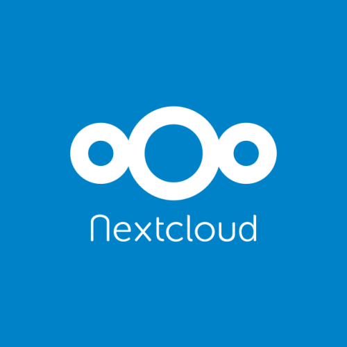

Why would I do this?
Finances and Files are the most difficult things for a business to keep track of. Luckily,Open Source software is trying to make that easier.
Nextcloud is similar to Dropbox, but it is entirely hosted on your own server, making sure that your files stay confidential. It also provides features like collaborating on documents, chat and even allows calls.
Invoice Ninja allows you to send invoices, handle expenses and a lot more. Together, they can form the backbone of any business infrastructure.
In this tutorial, you will learn how to set up both inside of Docker containers on a Ubuntu server, and have a homepage which can direct you between the two using Apache
Video Guide
Prerequisites
- Ubuntu 20.04 LTS
- A network only accessible to secure devices
Install Docker
The first thing you need to do is to install Docker. This part of the tutorial is almost identical to the official Docker setup guide, so you can follow it there if you would prefer. Both of the services will run inside of Docker containers, so you can’t run them until it fully setup. Docker is a special piece of software which allows other pieces to run inside of Docker Containers. These containers isolate different services and prevent them from conflicting with each other
Make sure there are no older versions installed before you begin by running a command in terminal. The terminal is just a way to tell the computer what to do through typing rather than clicking. It is more powerful and faster than the normal way of using
the mouse for many tasks
You can open the terminal by pressing ctrl + alt + t:
sudo apt-get remove docker docker-engine docker.io containerd runc
Then you wil need to run:
sudo apt update
This refreshes your computers list of packages it can install. We do it before installing things just to make sure we always get the most up to date version
Docker needs us to be able to use apt over https, which is just a secure version of the protocol that you access the internet over. We need to install some packages to allow that before we can start installing Docker
sudo apt install \
apt-transport-https \
ca-certificates \
curl \
gnupg-agent \
software-properties-common
Now add Docker's GPG key to your system. The GPG key is just a way to verify the information being sent
curl -fsSL https://download.docker.com/linux/ubuntu/gpg | sudo apt-key add -
Before installing Docker, we need to add the repository it is located in. A repository is just a place where software is stored
sudo add-apt-repository \
"deb [arch=amd64] https://download.docker.com/linux/ubuntu \
$(lsb_release -cs) \
stable"
And now we can finally install Docker itself:
sudo apt update
sudo apt-get install docker-ce docker-ce-cli containerd.io
We will also install docker-compose, which allows docker conatiners to be ran and configured together. This is what Invoice Ninja uses, as it has a database and an Nginx server running alongside the app iteself
sudo apt install docker-compose
Install Nextcloud
Nextcloud installation is really simple when you have Docker. You run a single command, and it downloads the Nextcloud image, runs it, and makes it accessible on a specific port. A port is just a specfic place on your computers network. Each thing you run will communicate on a different port
sudo docker run -d -p 8080:80 --restart unless-stopped nextcloud
Install Invoice Ninja
First, we download the repo from GitHub, and then move into the directory
git clone https://github.com/invoiceninja/dockerfiles.git
cd dockerfiles
Now, we need to make some changes to the env and docker-compose file. You can do this in your text editor of choice. I personally used VS Code, which you can install and open in the directory with
sudo snap install code --classic
code .
Then, you’ll need to generate an app key
sudo docker run --rm -it invoiceninja/invoiceninja php artisan key:generate --show
At the end of the output of that command will be a string of characters, beginning with base64. Copy the entire line and paste it into the APP_KEY field of the env file. (Make sure to remove the placeholder!).
We then need to change our APP_URL. This tutorial is focussing on running everything on your local network, so we will use our local IP address and port here, but if you are hosting somewhere off your network you will use your domain name in this field. To get the IP address for a local install, run:
hostname -I
and copy the IPv4 address listed there (it should be 4 numbers separated by full stops). Paste that into the field and add your port like this:
http://192.168.0.27:8081
Finally, we need to disable debug mode. This is useful for testing, but can be a security issue, and we do not really need it right now. To do it, change
APP_DEBUG=true
to
APP_DEBUG=false
That’s your env file finished! Save it, close it, and open yourdocker-compose.yml file. In this, find line 17 and change 80:80 to 8081:80. Save, exit, and then run the following command
sudo chown -R 1500:1500 docker/app
sudo docker-compose up -d
Before we move on, we should go through the setup process. To do this, go the address you put above in your browser and work through the steps on screen. When you reach the database section, you need to change the host to db, and the database to ninja. It should match your env file
Create a homepage which directs to both
We will use Apache to serve our homepage. We install it with:
sudo apt install apache2
We can test that by going to the IP address we found above, but with no ports this time. This is because Apache is running on port 80, which is the default port that your web browser is going to.
Now that we have Apache running, it's time to customise what it shows us. to do this, we need to run
cd /var/www
code .
This will open vs code in your /var/www directory. Inside of this, you'll see a folder called html, and inside of that will be a file named index.html. Replace the contents of that file with the code below
<!DOCTYPE html>
<html>
<head>
<title>Redirect</title>
</head>
<body>
<ul>
<li><a href="<INSERT Nexcloud IP AND PORT HERE>">Nextcloud</a></li>
<li><a href="<INSERT Invoice Ninja IP AND PORT HERE>">Invoice Ninja</a></li>
</ul>
</body>
</html>
Now, you just run
sudo systemctl restart apache2
That restarts apache and applies our changes. Now, we can access our homepage at our IP address from above, and it will have links to Nextcloud and Invoice Ninja
Troubleshooting
Invoice Ninja error 500
This error seems to be caused by issues with the key we generated. To resolve it, rerun
sudo docker run --rm -it invoiceninja/invoiceninja php artisan key:generate --show
and paste the result over the top of the code you already generatedInvoice Ninja warning about debug mode
This issue means you did not change the APP_DEBUG variable in the env file to false. It should be on line 3 of the file
Invoice Ninja email
Some email services such as Gmail will require you to enable logging in from less secure devices in order for Invoice Ninja to access them